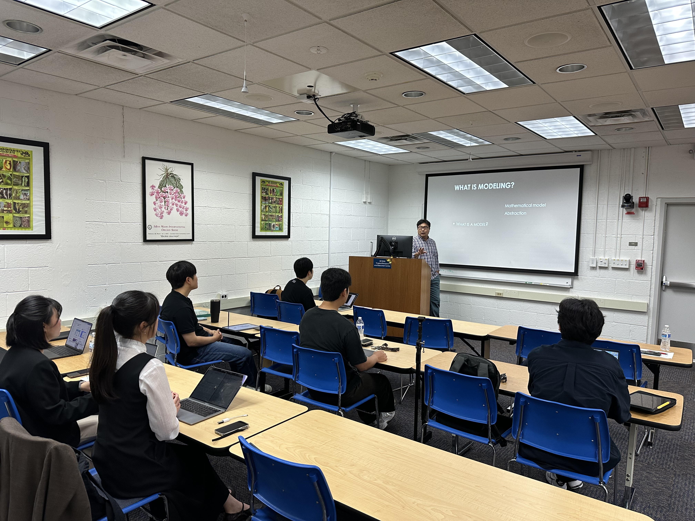
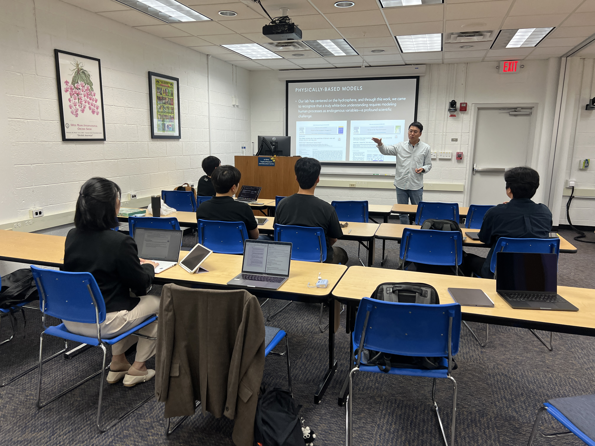
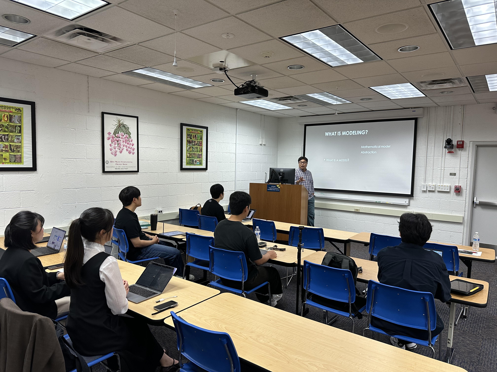
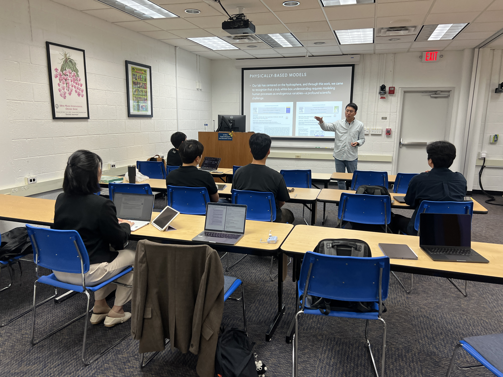

Environmental Intelligence for Informed Decisions

Our vision is Environmental Intelligence for Informed Decisions. Toward this vision, we pursue Truth-Telling through Unfolding the Possibility Spaces and Understanding the Complexity, grounded in three core pillars: Complexity Science, Physically-Based Models, and Exponential Technologies. Complexity science is for better comprehension of human–nature interactions, physically-based models for better representations of environmental processes, and exponential technologies for better interpretations of environmental big data.
Albert Einstein once remarked, “Environment is everything.” Our three pillars are not confined to the natural environment alone but also include us—human beings—recognizing that humans and nature are inseparable in addressing today’s global challenges confronting our communities.
Environmental Intelligence
Our concept of Environmental Intelligence refers to an integrative intelligent system that supports informed decisions toward a world where humans and nature are harmonized. It originates from the recognition of environmental systems as complex systems and operates through the fusion of physically-based models that represent natural processes with exponential technologies, including artificial intelligence, that emulate human behaviors and societal outcomes. Beyond the mere collection or provision of information, Environmental Intelligence embodies a cognitive system that senses environmental changes, interprets their meanings, and transforms insights into action—an organized endeavor of humanity to confront global environmental crises with the best of our knowledge and wisdom to sustain the long-term harmony between people and the planet.
2026 News
Following the AGU Annual Meeting, most members of the lab gathered in Gainesville, Florida—where Prof. Jeong is spending his sabbatical year—for a focused lab retreat at the University of Florida. Joining the retreat after AGU was Kyungmin Kim, an alum of the lab and currently a Ph.D. student at the University of Arizona, whose participation further enriched the discussions.
From the Christmas holiday through the end of January 2026, the lab conducted an NRF Mid-career Research Project–funded international collaboration with Prof. Younggu Her’s group at UF. During this period, a dedicated workshop was organized to share the core objectives and research directions of the NRF project. The workshop featured insightful lectures on environmental modeling and AI-driven modeling approaches delivered by Prof. Her, Prof. Jeong, Dr. Jeung, and Dr. Kim. Beyond technical discussions, the workshop became an important forum to reflect on what we mean by “informed decisions” and what kind of Environmental Intelligence is required to support them. Through interdisciplinary dialogue, participants explored how physically-based modeling, socio-hydrological understanding, and AI methodologies can be integrated to move beyond prediction toward decision-oriented knowledge. In addition to invited lectures, lab members presented their ongoing research and received in-depth feedback.
The month-long research residency in Florida provided a rare opportunity for intensive discussion, refinement of dissertation trajectories, and strategic alignment of each member’s graduate research direction, ultimately marking a milestone that strengthened international collaboration and shaped the next phase of the lab’s research agenda.
 



Contact
Email: hanjeong@seoultech.ac.kr
Phone: +82-2-970-6630
Office: Room 312, Chungun-Hall, SeoulTech
Lab: Room 120, Chungun-Hall, SeoulTech